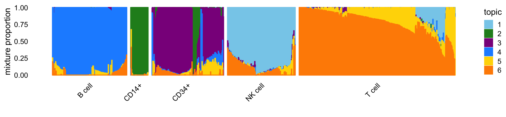
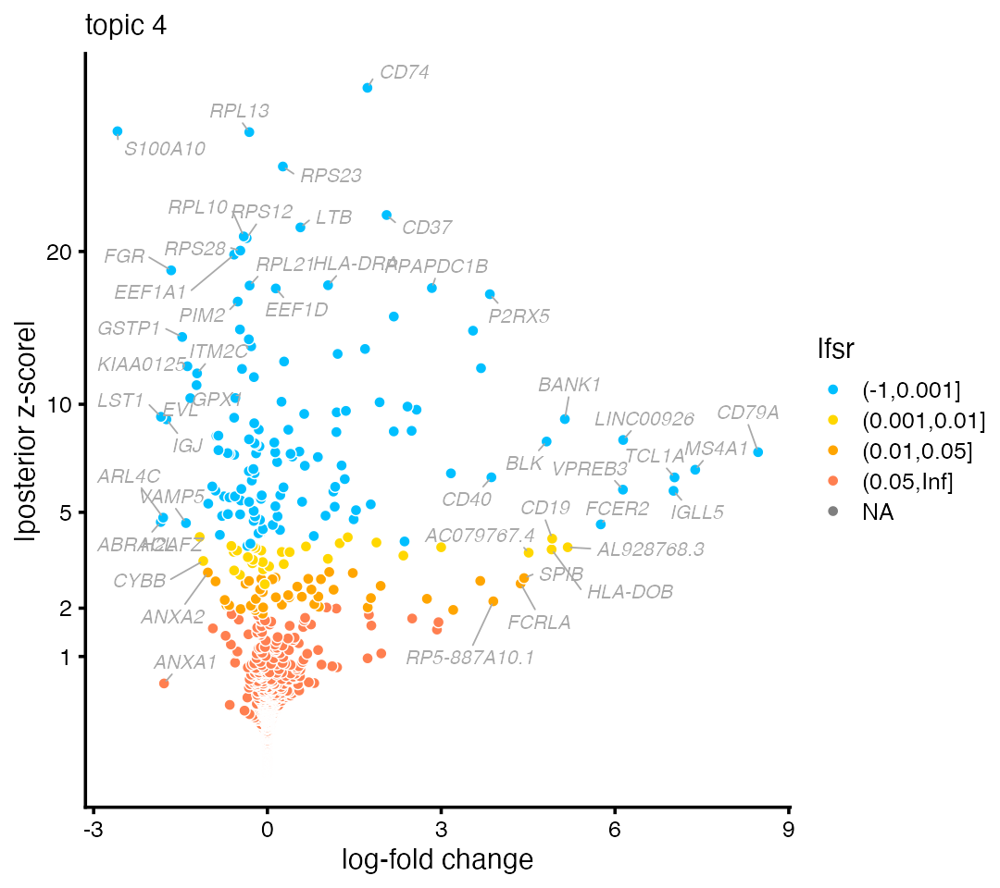
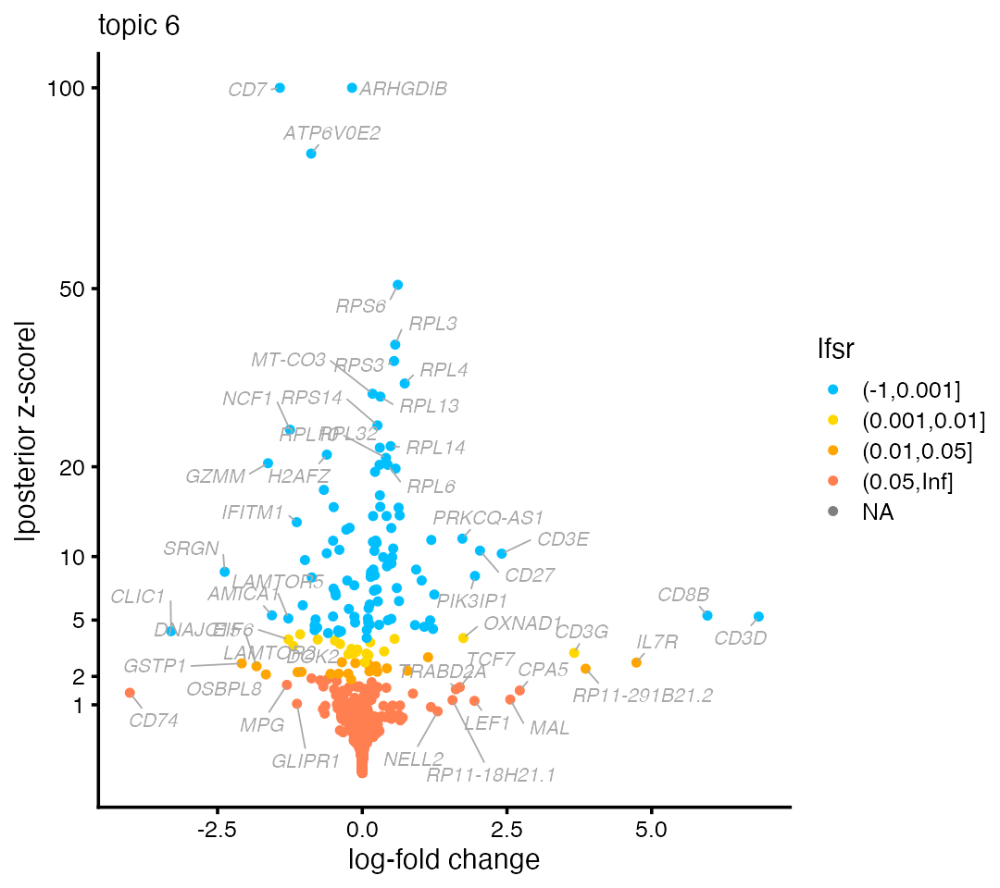

Analysis of single-cell RNA-seq data using a topic model, Part 1: basic concepts
Peter Carbonetto
2023-03-14
Source:vignettes/single_cell_rnaseq_basic.Rmd
single_cell_rnaseq_basic.RmdThe aim of this vignette is to introduce the basic concepts behind an analysis of single-cell RNA-seq data using a topic model, and to show how to use ‘fastTopics’ to implement this analysis. This first vignette explains the analysis steps at only a high level—see Part 2 for additional explanations and guidance.
Since a topic model analysis is quite different from most conventional analyses of single-cell RNA-seq data, we point out key differences.
One important difference is that a topic model is a model of count data, so the topic model should be applied directly to the count data. In contrast, many methods require preprocessing of the count data.
We begin our analysis by loading the packages. Then we set the seed so that the results can be reproduced.
The example data set
We will illustrate the concepts using a single-cell RNA-seq data set from Zheng et al (2017). These data are reference transcriptome profiles from 10 bead-enriched subpopulations of peripheral blood mononuclear cells (PBMCs). The original data set is much larger—for this introduction, we have taken a small subset of approximately 3,700 cells.
The data we will analyze are unique molecular identifier (UMI) counts. These data are stored as an \(n \times m\) sparse matrix, where \(n\) is the number of cells and \(m\) is the number of genes:
The UMI counts are “sparse”—that is, most of the counts are zero. Indeed, over 95% of the UMI counts are zero:
mean(counts > 0)
# [1] 0.04265257No need to normalize or transform
Most analyses of single-cell RNA-seq data involve a preprocessing step in which the UMI counts are log-transformed and normalized. When analyzing UMI counts with a topic model, you should not normalize or transform the counts.
Additionally, analyses of single-cell RNA-seq data typically select only the most highly variable genes. We recommend instead using all or most genes. The exception are genes in which all the UMI counts are zero—these genes should be removed prior to a topic model analysis.
Fit the topic model
Since no pre-processing is needed, we can move directly to the next
step of the analysis: fitting the topic model to the UMI count data.
This is accomplished with a call to fit_topic_model:
fit <- fit_topic_model(counts,k = 6)Note it may take several minutes to fit the topic model on this data set. For convenience, we saved the output from this call:
fit <- pbmc_facs$fitTo fit a topic model, we must specify \(K\), the number of topics. Here, we have chosen \(K = 6\) topics. In most settings, a good choice of \(K\) will not be known in advance, so you will you want to explore the results from topic models at different settings of \(K\).
The fit_topic_model interface is intended to hide the
details of model fitting, and it should work well for many data sets.
Larger or more complex data sets my require some fine-tuning of the
model fitting. See Part
2 for more on this.
Each cell is represented as a unique combination of topics
A key feature of the topic model is that each cell \(i\) is represented as a unique combination of the topics. Therefore, each cell can be summarized by the \(K\) topic proportions. These cell-specific proportions are learned from the data. In ‘fastTopics’, the topic proportions for all cells are stored in an \(n \times K\) matrix:
dim(fit$L)
# [1] 3774 6To illustrate, here is a cell in which the pattern of expression is almost fully captured by the fourth topic:
rows <- "GATATATGTCAGTG-1-b_cells"
round(fit$L[rows,],digits = 3)
# k1 k2 k3 k4 k5 k6
# 0.000 0.000 0.000 0.985 0.015 0.000Here are two more examples:
rows <- c("GACAGTACCTGTGA-1-memory_t",
"TGAAGCACACAGCT-1-b_cells")
round(fit$L[rows,],digits = 3)
# k1 k2 k3 k4 k5 k6
# GACAGTACCTGTGA-1-memory_t 0 0.002 0.002 0.000 0.087 0.909
# TGAAGCACACAGCT-1-b_cells 0 0.000 0.058 0.657 0.000 0.285The last example is interesting because the observed expression is best captured by a combination of topics 4 and 6.
To make sense of these results, we first need to understand the biological relevance of the topics, which we explore next.
Interpreting topics using available cell labels
In some cases, you may have additional information about the cells, such as the tissue the cells were sampled from. (For interpreting topics when cells are not labeled, see Part 2.) In the PBMC data, the cells were labeled using fluorescence-activated cell sorting (FACS). Each cell is assigned one of five labels (each corresponding to a cell type): B cells, CD14+ monocytes, CD34+ cells, natural killer (NK) cells, and T cells.
samples <- pbmc_facs$samples
summary(samples$subpop)
# B cell CD14+ CD34+ NK cell T cell
# 767 163 687 673 1484Create a “Structure plot” to visualize the relationship between the cell labels and the topic proportions:
topic_colors <- c("skyblue","forestgreen","darkmagenta","dodgerblue",
"gold","darkorange")
structure_plot(fit,colors = topic_colors,topics = 1:6,gap = 25,
grouping = samples$subpop)
The Structure plot is a stacked bar chart in which each topic is
represented as a bar of a different colour, and the bar heights are the
topic proportions. Patterns begin to emerge when the cells are arranged
so that cells with similar topic proportions are positioned close to
each other. This arrangement is automated in
structure_plot.
From the Structure plot, we see that topics 1 (light blue), 2 (green) and 4 (dark blue) closely correspond to NK, CD14+ and B cell types, respectively; expression in these cells is largely explained by a single topic.
The topic model also captures interesting substructure within the T cells: most T cells are explained by at least two topics, with wide variation in the proportions for these two topics; also, there is a subset of T cells that are explained by three topics (topics 1, 5 and 6).
Predicting topics in other cells
Having fitted a topic model to a single-cell data set, we can use that model to predict topics for cells that were not used to train the model. We illustrate this with a separate collection of 100 cells drawn from the same PBMC data set:
counts_test <- pbmc_facs$counts_test
dim(counts_test)
# [1] 100 16791The “predict” function estimates the topic proportions based on a previously fit topic model.
Ltest <- predict(fit,counts_test)The predictions appear to align well with the provided cell labels:
fit_test <- list(F = fit$F,L = Ltest)
class(fit_test) <- c("multinom_topic_model_fit","list")
structure_plot(fit_test,topics = 1:6,colors = topic_colors,gap = 2,
grouping = pbmc_facs$samples_test$subpop)
Topics capture patterns of relative expression
Each topic is represented as a vector of \(m\) expression levels which are stored as an \(m \times K\) matrix:
dim(fit$F)
# [1] 16791 6These expression levels are comparable across topics. For example, genes CD79A are CD79B are important to B cells, so we would expect higher expression in topic 4:
genes <- pbmc_facs$genes
rbind(fit$F[genes$symbol == "CD79B",],
fit$F[genes$symbol == "CD79A",])
# k1 k2 k3 k4 k5 k6
# [1,] 4.007731e-05 8.923875e-19 3.069143e-19 0.002135105 1.991487e-04 3.4455e-19
# [2,] 4.589634e-19 8.923875e-19 3.069143e-19 0.002747011 5.998699e-19 3.4455e-19The most informative genes are those with higher expression in one topic compared to the other topics. In the next section we explain how to identify these genes.
Annotating topics by differentially expressed genes
Consider a standard differential expression (DE) analysis of cell types: for a given cell type, the log-fold change (LFC) is estimated as the (base-2) log-ratio of two expression levels, the expression in cells belonging to the cell type over the expression in cells not belonging to the cell type.
‘fastTopics’ extends the standard DE analysis to allow for
partial membership to multiple groups (the methods are
described here).
This “grade of membership” (GoM) differential expression analysis is
implemented by the function de_analysis:
set.seed(1)
de <- de_analysis(fit,counts,pseudocount = 0.1,
control = list(ns = 1e4,nc = 4))Since this computation can take 10 minutes or more to run, we have
provided the output of this de_analysis call in the
pbmc_facs data set:
de <- pbmc_facs$deThe GoM DE analysis generates LFC estimates that have a similar interpretation to a standard DE analysis. To illustrate, the GoM DE analysis estimates strong overexpression of B-cell genes CD79A and CD79B in topic 4:
rbind(de$postmean[genes$symbol == "CD79A",],
de$postmean[genes$symbol == "CD79B",])
# k1 k2 k3 k4 k5 k6
# [1,] -0.008597818 0.008222993 -0.009362584 8.470222 0.004304411 -0.004352951
# [2,] -0.006685120 -0.003701642 -0.012284438 3.549019 1.876867972 -0.002461657Ultimately, we would like to discover genes most relevant to a topic, not just report LFC estimates for known genes. A common approach is to visualize the results of the DE analysis using a volcano plot. For example, here is the volcano plot for topic 4:
volcano_plot(de,k = 4,labels = genes$symbol)
Typically, the most interesting genes are found on the right-hand side of the volcano plot—that is, genes with large LFC—so long as they have a small lfsr (local false sign rate). Indeed, B cell gene CD79A is on the far right-hand side of the plot.
Likewise, natural killer genes such as NKG7 and GNLY emerge on the right-hand side of the volcano plot for topic 1:
volcano_plot(de,k = 1,labels = genes$symbol,ymax = 100)
Some of the genes with the largest LFCs are CD3D, CD3E and CD8B which suggest topic 6 is capturing expression specific to T cells:
volcano_plot(de,k = 6,labels = genes$symbol,ymax = 100)
See also Part 2 for more DE analysis examples.
Session info
This is the version of R and the packages that were used to generate these results.
sessionInfo()
# R version 3.6.2 (2019-12-12)
# Platform: x86_64-apple-darwin15.6.0 (64-bit)
# Running under: macOS Catalina 10.15.7
#
# Matrix products: default
# BLAS: /Library/Frameworks/R.framework/Versions/3.6/Resources/lib/libRblas.0.dylib
# LAPACK: /Library/Frameworks/R.framework/Versions/3.6/Resources/lib/libRlapack.dylib
#
# locale:
# [1] en_US.UTF-8/en_US.UTF-8/en_US.UTF-8/C/en_US.UTF-8/en_US.UTF-8
#
# attached base packages:
# [1] stats graphics grDevices utils datasets methods base
#
# other attached packages:
# [1] cowplot_1.1.1 ggplot2_3.3.6 fastTopics_0.6-150 Matrix_1.2-18
#
# loaded via a namespace (and not attached):
# [1] httr_1.4.2 sass_0.4.0 tidyr_1.1.3 jsonlite_1.7.2
# [5] viridisLite_0.3.0 bslib_0.3.1 RcppParallel_5.1.5 assertthat_0.2.1
# [9] highr_0.8 mixsqp_0.3-46 progress_1.2.2 yaml_2.2.0
# [13] ggrepel_0.9.1 pillar_1.6.2 backports_1.1.5 lattice_0.20-38
# [17] quadprog_1.5-8 quantreg_5.54 glue_1.4.2 digest_0.6.23
# [21] colorspace_1.4-1 htmltools_0.5.4 pkgconfig_2.0.3 invgamma_1.1
# [25] SparseM_1.78 purrr_0.3.4 scales_1.1.0 Rtsne_0.15
# [29] MatrixModels_0.4-1 tibble_3.1.3 farver_2.0.1 generics_0.0.2
# [33] ellipsis_0.3.2 withr_2.5.0 ashr_2.2-54 pbapply_1.5-1
# [37] lazyeval_0.2.2 cli_3.5.0 magrittr_2.0.1 crayon_1.4.1
# [41] memoise_1.1.0 mcmc_0.9-6 evaluate_0.14 fs_1.5.2
# [45] fansi_0.4.0 MASS_7.3-51.4 truncnorm_1.0-8 prettyunits_1.1.1
# [49] tools_3.6.2 data.table_1.12.8 hms_1.1.0 lifecycle_1.0.3
# [53] stringr_1.4.0 MCMCpack_1.4-5 plotly_4.10.1 munsell_0.5.0
# [57] irlba_2.3.3 compiler_3.6.2 pkgdown_2.0.2 jquerylib_0.1.4
# [61] systemfonts_1.0.2 rlang_1.0.6 grid_3.6.2 htmlwidgets_1.6.1
# [65] labeling_0.3 rmarkdown_2.11 gtable_0.3.0 DBI_1.1.0
# [69] R6_2.4.1 knitr_1.37 dplyr_1.0.7 uwot_0.1.10
# [73] fastmap_1.1.0 utf8_1.1.4 rprojroot_1.3-2 ragg_0.3.1
# [77] desc_1.2.0 stringi_1.4.3 parallel_3.6.2 SQUAREM_2017.10-1
# [81] Rcpp_1.0.8 vctrs_0.3.8 tidyselect_1.1.1 xfun_0.29
# [85] coda_0.19-3